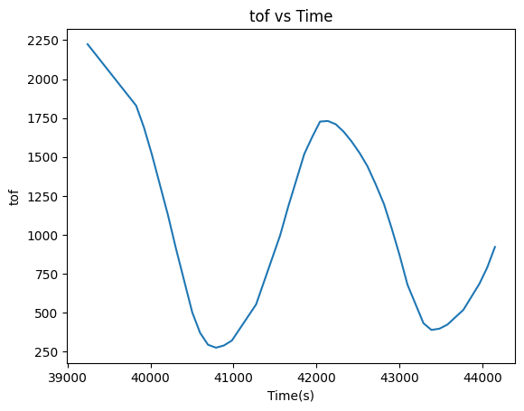
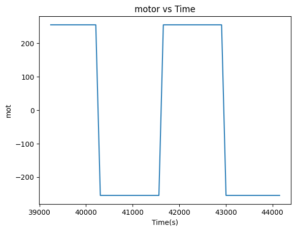

Objective
In lab 8, I used everything that we learned from the previous labs to do a stunt. Again, since I chose task A in the earlier labs, I decided to do the stunt for position control, which started around 3 meters from the wall, drove towards the wall until around it was around 0.5m away, then performed a flip and drove back.
I worked with Eshita Sangani on this lab.
Implementation
Because I wanted to speed towards the wall as fast as possible, I did not use PID control. Instead, I used a single PWM value and used the ToF sensor values to determine whether to suddenly change directions or not. The code used to do this is shown below:
The target is manually set by the user for ease of debugging, we found that a value of around 500mm was sufficient.
The Arduino code has 5 seconds to run the whole sequence. It drives the robot towards the wall, continually checking for data. Once the distance from the wall is detected to be less than the target, it immediately spins the wheels backwards at maximum speed.
When we tested the robot, it was unable to flip. We initially tested the robot in the lobby of our apartment building as seen in the first video, and then moved into the hallway outside of the lab with the sticky mat, as seen in the second video. The associated plots are also shown below. At this point, we went through a series of tests to try to diagnose the issue.
 Testing
The next thing we tried was to do open loop control. With this, we reverted back to our lab 5 PWM code. We added delays so that it would drive forwards for 2 seconds then revert directions and drive backwards for 2 seconds. This was to see whether the robot simply had the capability to flip. Then, to see whether the weight was playing a difference, we did the same test but in the opposite direction (backwards first, then forwards). We also tried flipping the robot upside down, but none of these were successful. The trial is shown below, but we did not record ToF or motor data since this was a test to see if the stunt worked.